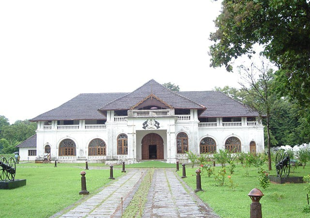
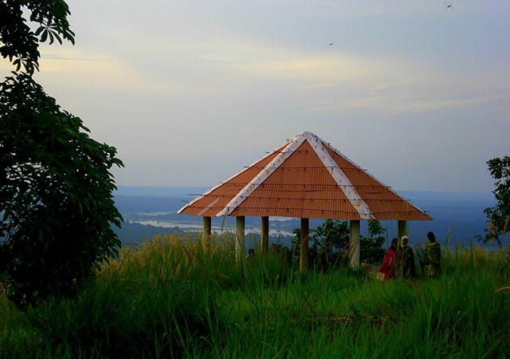

The term Thrissur is the abbreviated anglicized form of the Malayalam word ‘THRISSIVAPERUR’ which means the town of the “SACRED SIVA”. The town is built on an elevated ground, at the apex of which is the famous “VADAKKUMNATHAN” Temple. A place of great antiquity, Thrissur was also known as “VRISHABHADRIPURAM” and “TEN KAILASAM” in ancient days.The architectural design of the city also worths special mentioning as it was envisioned by Sakthan Thampuran, the ruler of erstwhile Cochin state. City located around a small hillock mounted by the Vadakkumnathan temple can be seen scientifically planned. Actually the city is built around the vast open space called ‘Thekkinkadu maidanam’ surrounding the centrally located Vadakkumnatha temple.Around the maidan lies the ‘Swaraj Round’, the circular ring road, with several radial roads starting from it. The raised centre and the slopes starting from there are surrounded by green, fertile wetlands used for cultivating paddy.

